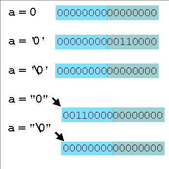

Las constantes numéricas en un programa C
pueden escribirse en varias bases.
Puede resultar de suma utilidad ver la tabla
ASCII para entender mejor el capítulo.
10, -1 son constantes decimales.
010, -012 son constantes octales por comenzar en "0".
0x10, -0x1B, 0Xbf01 son constantes hexadecimales por comenzar en "0x" o "0X".
'A' es una constante de carácter. En un computador que sigue la convención del código ASCII, equivale al decimal 65, hexadecimal 0x41, etc.
Una constante entera puede indicarse como 'long' agregando una letra L mayúscula o minúscula:
0L, 43l
Si bien numéricamente son equivalentes a 0 y a 43 int,
el compilador al encontrarlas manejará constantes de
tamaño
long (construirá objetos de datos sobre la cantidad de
bits correspondientes a un long). Esto puede ser importante en
ciertas ocasiones. Por ejemplo, al invocar a funciones con argumentos
formales long, usando argumentos reales que caben en un
entero.
Para hacer
más claro el propósito de
una constante positiva, o para forzar la promoción de una
expresión, puede notársela como unsigned. Esto
tiene que ver con las reglas de promoción
expresadas en el capítulo 3.
Constantes unsigned son, por ejemplo:
32u y 298U
El texto comprendido entre comillas dobles (") en un programa C es interpretado por el compilador como una constante string, con propiedades similares a las de un arreglo de caracteres. El proceso de compilación, al identificarse una constante string, es como sigue:
el compilador reserva una zona de memoria en la imagen del programa que está construyendo, del tamaño del string más uno.
se copian los caracteres entre comillas en esa zona, agregando al final un byte conteniendo un cero ('\0').
se reemplaza la referencia a la constante string en el texto del programa por la dirección donde quedó almacenada.
La cadena registrada por el compilador será almacenada al momento de ejecución en la zona del programa correspondiente a datos estáticos inicializados o bss.
Así, una constante string equivale a una dirección de memoria: la dirección donde está almacenado el primer carácter. El carácter '\0' del final señaliza el fin de la cadena, y sirve como protocolo para las funciones de biblioteca standard que se ocupan de manejo de strings.
¿Hay diferencias entre '\0', '0' y "0"? Muchas.
La primera constante es un entero. Su valor es 0.
La segunda es de carácter. Ocupa un objeto de datos de 8 bits de tamaño. Su valor es 48 decimal en computadoras cuyo juego de caracteres esté basado en ASCII.
La tercera es una constante string, y se evalúa a una dirección. Ocupa un objeto de datos del tamaño de una dirección (frecuentemente 16 o 32 bits), además del espacio de memoria ubicado a partir de esa dirección y ocupado por los caracteres del string. Ese espacio de memoria está ocupado por un byte 48 decimal (el primer y único carácter del string) y a continuación viene un byte 0 (señal de fin del string).
Si tenemos las declaraciones y asignaciones siguientes:
char a,b,c;
a='\0';
b= '0';
c= "0";
La primera asignación es perfectamente válida y equivale a a=0. La segunda también es correcta y equivale a b=48 en computadores basados en ASCII. La tercera será rechazada por el compilador, generándose un error de "asignación no portable de puntero" . Los objetos a ambos lados del signo igual son de diferente naturaleza: a la izquierda tenemos algo que puede ser directamente usado como un dato (una constante o una variable); a la derecha, algo que referencia, indirectamente, a un dato (una dirección). Se dice que la variable y la constante string tienen diferente nivel de indirección.
|
 |
El
gráfico muestra el resultado de asignar algunas constantes
relacionadas con el problema anterior, suponiendo una arquitectura
donde los enteros y las direcciones de memoria son de 16 bits. Las tres
primeras asignaciones dejan en a valores
aritméticos 0, 48 y 0. Las dos últimas asignaciones dejan en a la dirección de una cadena almacenada en memoria. Las cadenas apuntadas son las que están representadas en el diagrama. La primera cadena contendrá el código ASCII del carácter 0 y un cero binario señalizando el fin del string. La segunda contendrá un cero binario (expresado por la constante de carácter '\0') y un cero binario fin de string. |
Las constantes de carácter son una forma expresiva y portable de especificar constantes numéricas. Internamente, durante la compilación y ejecución del programa, el compilador las entiende como valores numéricos sobre ocho bits. Así, es perfectamente lícito escribir expresiones como 'A' + 1 (que equivale a 66, o a 0x42, o a la constante de carácter 'B').
Algunos caracteres especiales tienen una grafía especial:
\b carácter 'backspace', ASCII 8
\t tabulador, ASCII 9
\n fin de línea, ASCII 10 (UNIX) o secuencia 13,10 (DOS)
\r retorno de carro, ASCII 13
Una forma alternativa de escribir constantes de carácter es mediante su código ASCII:
'\033', '\x1B'
Aquí representamos el carácter cuyo código ASCII es 27 decimal, en dos bases. La barra invertida (backslash) muestra que el contenido de las comillas simples debe ser interpretado como el código del carácter. Si el carácter siguiente al backslash es x o X, el código está en hexadecimal; si no, está en octal. Para representar el carácter backslash, sin su significado como modificador de secuencias de otros caracteres, lo escribimos dos veces seguidas.
Estas constantes de carácter pueden ser también escritas respectivamente como las constantes numéricas 033, 27 o 0x1B, ya que son aritméticamente equivalentes; pero con las comillas simples indicamos que el programador "ve" a estas constantes como caracteres, lo que puede agregar expresividad a un segmento de programa.
Por ejemplo, 0 es claramente una constante numérica; pero si escribimos '\0' (que es numéricamente equivalente), ponemos en evidencia que pensamos en el carácter cuyo código ASCII es 0. El carácter '\0' (ASCII 0) es distinto de '0' (ASCII 48). La expresión de las constantes de carácter mediante backslash y algún otro contenido se llama una secuencia de escape.
Todas estas notaciones para las constantes de carácter pueden intervenir en la escritura de constantes string.
El mecanismo de reconocimiento de constantes de caracteres dentro de strings asegura que todo el juego de caracteres de la máquina pueda ser expresado dentro de una constante string, aun cuando no sea imprimible o no pueda producirse con el teclado. Cuando el compilador se encuentre analizando una constante string asignará un significado especial al carácter barra invertida o backslash (\). La aparición de un backslash permite referirse a los caracteres por su código en el sistema de la máquina (por lo común, el ASCII).
Las constantes en punto flotante se caracterizan por
llevar un punto decimal o un carácter 'e' (que indica que
está en notación exponencial). Así:
10.23, .999, 0., 1.e10,
1.e-10, 1e10
son constantes en punto flotante.
La constante 6.02e23 se interpreta como
el número 6.02 multiplicado por 1023.
La constante -5e-1 es igual a -1/2 .
Como una alternativa más legible y expresiva a la definición de constantes de preprocesador, se pueden definir grupos de constantes reunidas por una declaración. Una declaración de constantes enumeradas hace que las constantes tomen valores consecutivos de una secuencia.
Si no se especifica el primer inicializador, vale 0. Si alguno se especifica, la inicialización de los restantes continúa la secuencia.
enum meses { ENE = 1, FEB, MAR, ABR, MAY, JUN,
JUL,AGO, SEP, OCT, NOV,
DIC };
En este ejemplo, los valores de las constantes son ENE = 1, FEB = 2, MAR = 3, etc.
Las constantes de una enumeración no necesitan tener valores distintos, pero todos los nombres en las diferentes declaraciones enum de un programa deben ser diferentes.
enum varios { ALFA, BETA, GAMMA, DELTA = 5, IOTA, PI =
1, RHO };
Aquí los valores asumidos son respectivamente 0, 1, 2, 5, 6, y nuevamente 1 y 2.
1. Indicar si las siguientes constantes están bien formadas, y en caso afirmativo indicar su tipo y dar su valor decimal.
a. 'C' |
h. '0' |
o. '0xAB' |
b. 70 |
i. 1A |
p. 0xABL |
c. 070 |
j. '010' |
q. 0xaB |
d. 080 |
k. 0x10 |
r. '0xAB' |
e. 0XFUL |
l. '\030' |
s. -40L |
f. 015L |
m. x41 |
t. 'B' |
g. '\xBB' |
n. 'AB' |
u. 322U |
2. Indicar qué caracteres componen las constantes string siguientes:
a. "ABC\bU\tZ"
b. "\103B\x41"
3. ¿Cómo se imprimirán estas constantes string?
a. "\0BA"Ejercicios Adicionales
b. "\\0BA"
c. "BA\0CD"